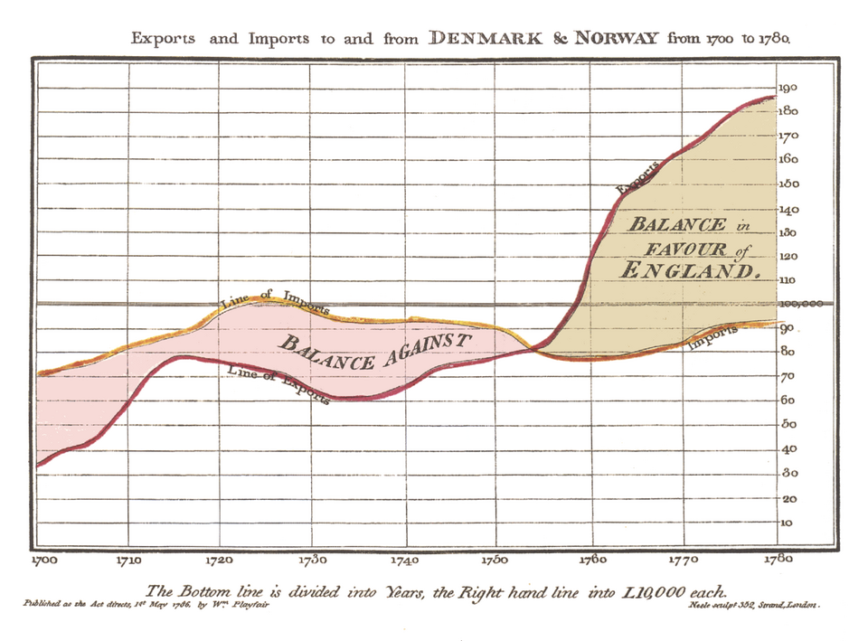
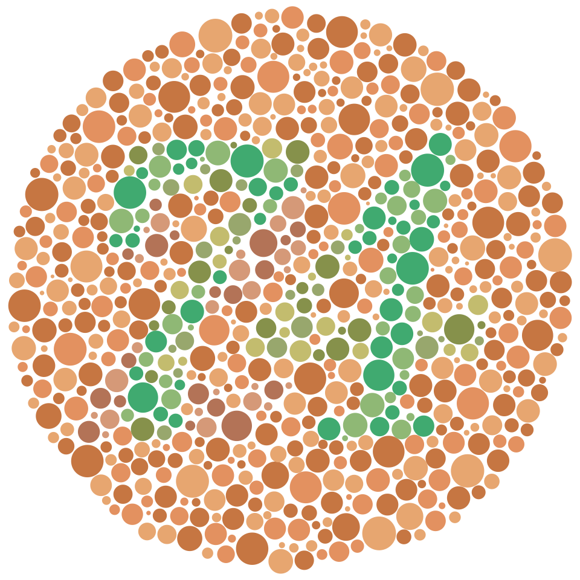
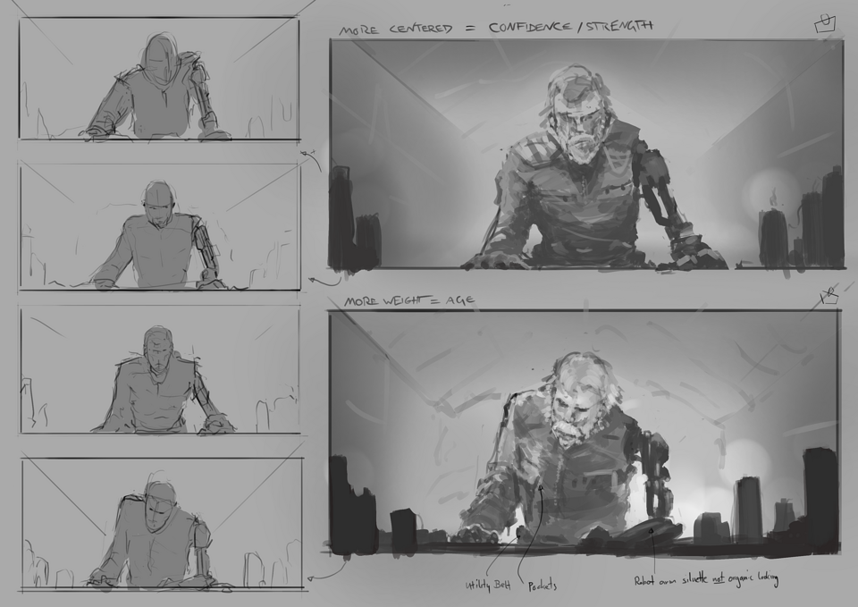

AysegulAytoeren
AysegulAytoeren
Good morning!
Nur das Schöne wird die Welt retten!
Fjodor Dostojewski
Nicht verzagen, Doc Alvers fragen!
Informatik — Grundkurs 11
Folien, die wirken
Exkurs Präsentieren — Diagramme, Farbe, Schrift und Weißraum
Nicht verzagen, Doc Alvers fragen!
Kapitel 01
Das richtige Diagramm
Linie, Balken, Kreis, Punktwolke

Nicht verzagen, Doc Alvers fragen!
Wo wir stehen
Im Projekt habt ihr schon präsentiert — heute geht es um die Regeln dahinter
Letzte Woche: Wissen teilen im Wiki
Heute der zweite Exkurs: Schnuppern in den Wahlbereich Präsentieren
Leitfrage: Hilft diese Folie dem Publikum, die Aussage zu verstehen?
Nicht verzagen, Doc Alvers fragen!
Welches Diagramm wofür?
| Diagramm | zeigt | Vorsicht |
|---|---|---|
| Liniendiagramm | Entwicklung über die Zeit | Achsenausschnitt nur mit Hinweis |
| Balkendiagramm | Vergleich einzelner Werte | Werteachse beginnt bei null |
| Kreisdiagramm | Anteile an einem Ganzen | wenige Kategorien, Summe 100 Prozent |
| Streudiagramm | Zusammenhang zweier Größen | zeigt keine Ursache |
Beim Streudiagramm trägt jeder Punkt zwei Werte — ein Muster zeigt einen Zusammenhang
Nicht verzagen, Doc Alvers fragen!
Kreis oder Balken?
Der Kreis zeigt nur Anteile an einem Ganzen — die Summe muss 100 Prozent sein
Ab etwa fünf Segmenten wird er unlesbar
Winkel lassen sich schlechter vergleichen als Längen
Im Zweifel: Balken
Nicht verzagen, Doc Alvers fragen!
Der abgeschnittene Nullpunkt
| Wert | Balken, Achse ab 0 | Balken, Achse ab 45 |
|---|---|---|
| 50 | 50 Einheiten lang | 5 Einheiten lang |
| 55 | 55 Einheiten lang | 10 Einheiten lang |
| wirkt wie | 10 Prozent mehr | doppelt so viel |
Die Balkenlänge wird als Größe gelesen — deshalb beginnt die Werteachse bei null
3D-Balken täuschen ähnlich: Die Tiefe trägt keine Information, vordere Balken wirken größer
Nicht verzagen, Doc Alvers fragen!
Die Kernaussage zeigen
Die Überschrift nennt die Aussage, nicht das Thema
Statt Ergebnisse der Umfrage besser: Die meisten kommen mit dem Bus
Eine Farbe für das Wichtige, Grau für den Rest
Der Blick soll wissen, wohin
Nicht verzagen, Doc Alvers fragen!
Kapitel 02
Gestalten fürs Publikum
Farbe, Kontrast, Schrift, Weißraum

Nicht verzagen, Doc Alvers fragen!
Farbe mit Bedeutung
Farbe sparsam einsetzen — jede Farbe bedeutet etwas
Nie als einziges Unterscheidungsmerkmal
Etwa jeder zwölfte Mann kann Rot und Grün nicht sicher unterscheiden
Form, Muster oder Beschriftung müssen die Farbe stützen
Wenige Farben mit klarer Bedeutung wirken stärker als viele
Nicht verzagen, Doc Alvers fragen!
Kontrast und Schrift
Beamer verlieren viel Kontrast gegenüber dem Bildschirm — Hellgrau auf Weiß verschwindet
Dunkel auf Hell oder Hell auf Dunkel, klar getrennt — auch für die letzte Reihe
Fließtext mindestens etwa 24 Punkt — wer verkleinern muss, hat zu viel Text
Serifenlose Schriften bleiben bei Projektion besser lesbar
Wichtiger als die Schriftart ist ausreichende Größe
Nicht verzagen, Doc Alvers fragen!
Weniger ist mehr
Text
Stichpunkte statt ganzer Sätze
wenige Zeilen je Folie
der Sprechtext gehört in die Notizen
Weißraum
führt den Blick
lässt die Aussage wirken
ist Absicht, kein Mangel
Nicht verzagen, Doc Alvers fragen!
Sieben Punkte sind zu viel
Das Publikum liest voraus und hört nicht mehr zu
Was vollständig lesbar ist, wird gelesen
Schrittweiser Aufbau hilft nur teilweise
Besser: die Punkte auf mehrere Folien verteilen
Nicht verzagen, Doc Alvers fragen!
Bilder und Barrierefreiheit
Bilder sollen die Aussage stützen, nicht dekorieren
Ein Bild, das die Sache zeigt, spart viele Worte — ein beliebiges Symbolbild lenkt ab
Auflösung, Rechte und Quelle gehören dazu
Barrierefrei: Kontrast, große Schrift, Alternativtexte
Was nur im Bild steht, sollte man auch sagen
Nicht verzagen, Doc Alvers fragen!
Kapitel 03
Planen, vorführen, weitergeben
Storyboard, Vorlage, Format, Feedback

Nicht verzagen, Doc Alvers fragen!
Erst das Storyboard
Ein Storyboard ist eine Skizze der Folienfolge — bevor gestaltet wird
Auf Papier lässt sich die Reihenfolge schnell ändern
Im Programm bindet man sich zu früh an die Gestaltung
Das Storyboard klärt zuerst die Dramaturgie
Nicht verzagen, Doc Alvers fragen!
Eine Vorlage für alle Folien
Wechselnde Layouts wirken unruhig — die Aufmerksamkeit soll beim Inhalt bleiben
Die Vorlage übernimmt Position, Größe und Farbe
Eine Änderung wirkt an einer Stelle für alle Folien — wie beim CMS
Foliennummer dezent unten — damit man sich in der Diskussion auf Folien beziehen kann
Nicht verzagen, Doc Alvers fragen!
Welches Format wofür?
| Format | wofür | warum |
|---|---|---|
| Weitergabe | Schriften und Umbrüche eingebettet — sieht überall gleich aus | |
| Quellformat | Weiterarbeiten | bleibt bearbeitbar |
| Video | Aufzeichnung | ersetzt die Folien nicht |
Zur Weitergabe PDF — wer weiterarbeiten soll, bekommt zusätzlich das Quellformat
Nicht verzagen, Doc Alvers fragen!
Feedback, das hilft
Kurzpräsentation von zwei Minuten, mit Kamera oder Tablet aufgenommen
Aufnahmen nur mit Einverständnis — und nach der Stunde löschen
Zuerst: Was war gut? Dann ein konkreter Tipp
Beschreiben, was man sieht: Du hast oft zur Wand gesprochen — statt: Das war schlecht
Nicht verzagen, Doc Alvers fragen!
Jede Gestaltungsentscheidung beantwortet eine Frage: Hilft es dem Publikum, die Aussage zu verstehen? Das richtige Diagramm, Farbe mit Bedeutung, große Schrift und viel Weißraum.
Merksatz
Nicht verzagen, Doc Alvers fragen!
Fun Facts
William Playfair erfand 1786 das Linien- und das Balkendiagramm, 1801 das Kreisdiagramm
Florence Nightingale zeigte mit Diagrammen, dass im Krimkrieg mehr Soldaten an Krankheiten starben als an Wunden
Die Farbtafeln von Shinobu Ishihara gibt es seit 1917 — sie werden bis heute benutzt
Das PDF stammt von 1993 und ist seit 2008 eine ISO-Norm
Nicht verzagen, Doc Alvers fragen!
Eure Aufgabe
Diagramm-Check: drei Diagramme aus Zeitung oder Netz — passt der Typ, beginnt die Achse bei null?
Umbauen: eine überladene Folie in zwei klare Folien verwandeln — mit aussagender Überschrift
Präsentationstraining: zwei Minuten vortragen, mit Videofeedback
Feedbackbogen: ein Lob und ein konkreter Tipp zu Diagramm, Schrift und Weißraum
Zum Schluss: Aufgaben (20) auf der Planseite — Lösung pro Aufgabe zum Aufklappen
Nicht verzagen, Doc Alvers fragen!